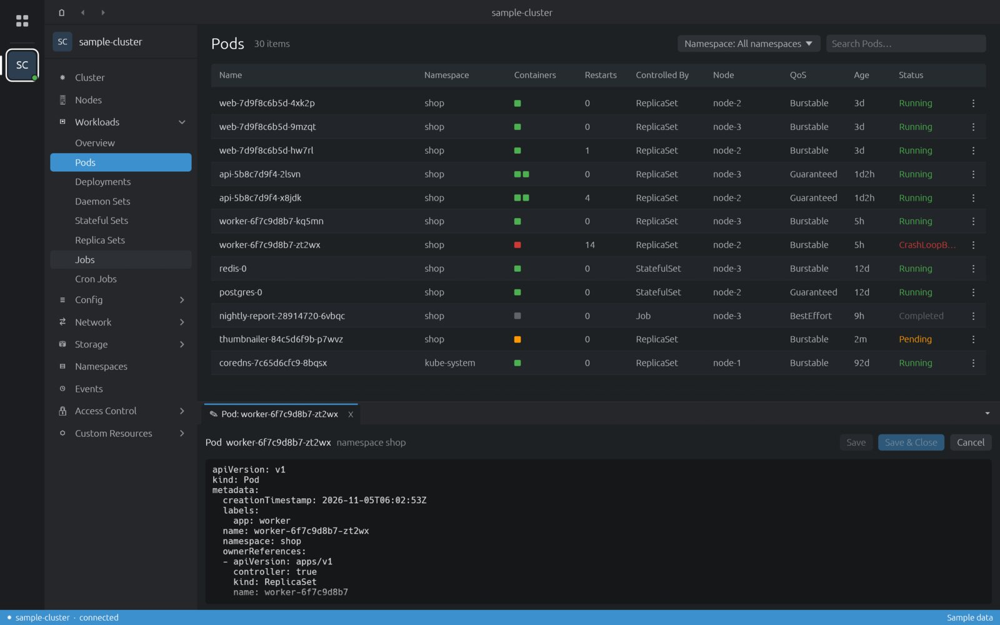

Guide
How to get around a cluster: lists, details, edits, logs and shells.
The window
| Area | What it holds |
|---|---|
| Hotbar (far left) | The Catalog button on top, then one icon per opened cluster. The gear at the bottom opens Preferences. |
| Sidebar | Resource groups of the current cluster: Cluster, Nodes, Workloads, Config, Network, Storage, Namespaces, Events, Access Control, Custom Resources. |
| Main area | The list or overview you picked. Back and forward arrows sit in the top bar. |
| Dock (bottom) | Tabs for logs, shells and YAML editors. Several can be open at once. |
| Status bar | The cluster and its connection state. Shows a notice when an update is ready. |
Overviews
Cluster shows CPU, memory and pod rings (usage, requests, limits, allocatable, capacity) and the current warning events. Workloads → Overview shows the state of pods, deployments, daemon sets, stateful sets, replica sets, jobs and cron jobs, followed by recent events.

Resource lists
- Pick a namespace from the Namespace menu, or keep All namespaces.
- Type in the search box to filter rows.
- Click a column header to sort.
- The ⋮ menu at the end of a row has the actions for that object.
Lists refresh by themselves. Nodes show live CPU and memory bars from metrics-server, every 30 seconds:
the bright part is usage, the faded part is requests. Without metrics-server the bars read N/A.

Details drawer
Click a row to open its details on the right: metadata, labels, status, conditions, and the parts that matter for the kind (containers for pods, rules for ingresses, and so on). Esc closes it.

The drawer's title bar has the actions:
| Action | Available for |
|---|---|
| Edit | Every kind. Opens the YAML in the dock. |
| Delete | Every kind, after a confirmation. |
| Scale | Deployments, stateful sets, replica sets. |
| Restart | Deployments, stateful sets, daemon sets. Pods are replaced one by one. |
| Logs, Shell | Pods, per container. |
| Open in browser | Ingresses with a host. |
Editing YAML
Edit opens the object in a dock tab. Save applies it and keeps the tab open; Save & Close applies and closes; Cancel drops the changes. Unsaved edits show ● modified.

Pod logs
- Pick the Container, or tick Previous container to read the log of the last crashed run.
- Show timestamps and Auto-refresh (every 10 seconds) are toggles.
- Type in the search box: matches are highlighted. Enter or the arrows jump between them.
- ANSI colours in the log are kept.

Pod shell
Shell runs kubectl exec -it into the chosen container, in a real terminal: colours, Unicode, mouse
selection and links.
| Keys | Does |
|---|---|
| Ctrl+C | Copies when text is selected; otherwise interrupts, as usual. |
| Ctrl+V | Pastes. |
| Click a link | Opens it in your browser. |
Font size and copy-on-select live in Preferences → Terminal.

Custom resources
Custom Resources lists every CRD in the cluster, grouped by API group
(cert-manager.io, monitoring.coreos.com, …). Each list uses the columns its definition declares
(additionalPrinterColumns). Definitions lists the CRDs themselves.